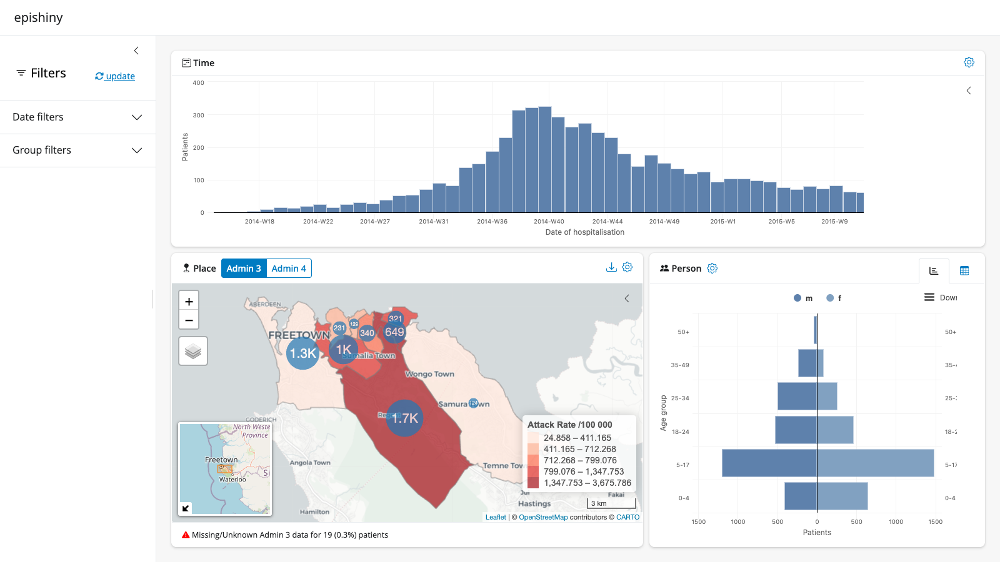
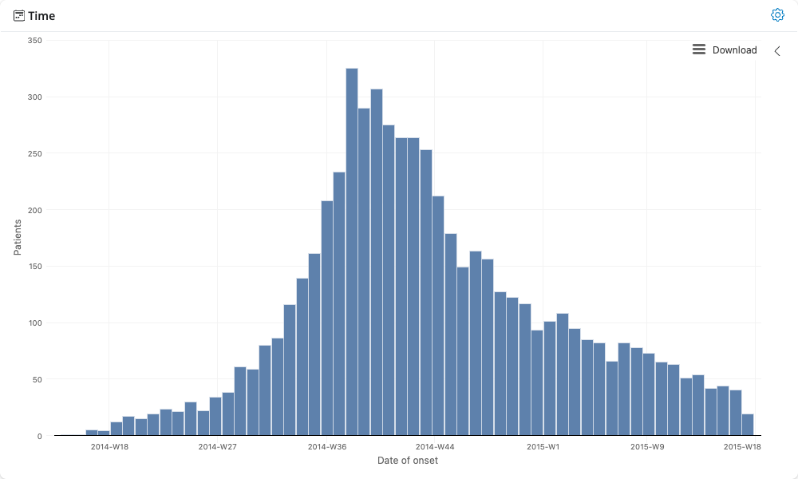
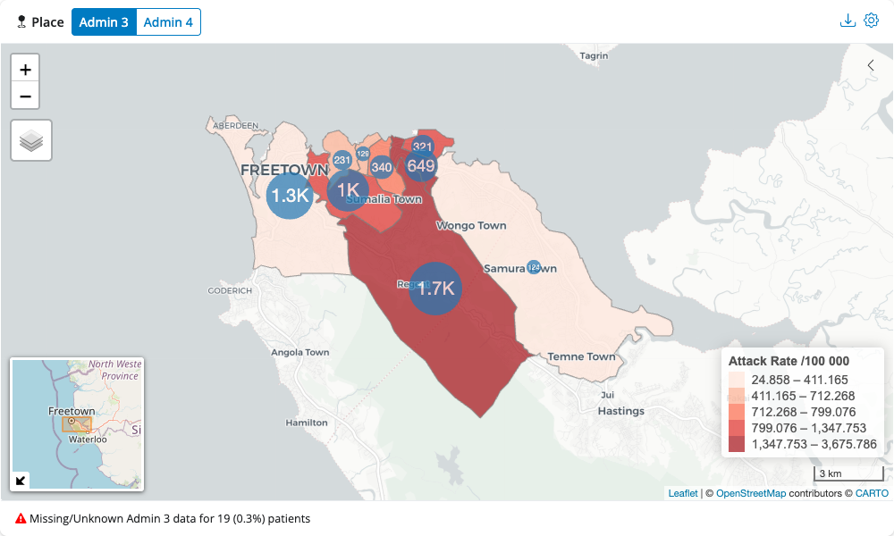
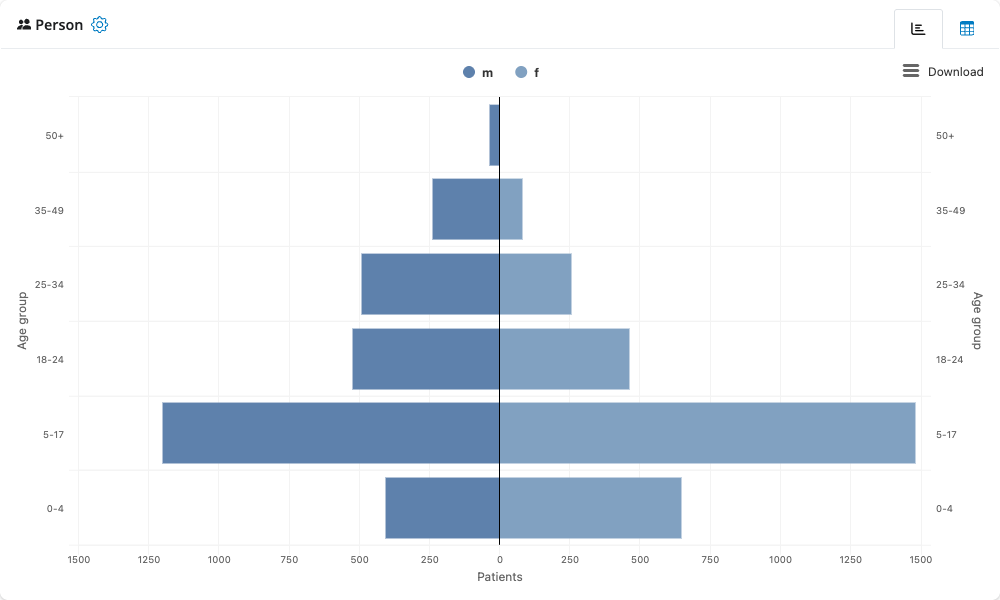

Global options
epishiny sets the following global options on start up
that are used across various modules. You can change any of these to
suit your needs via the options() function as below. Make
sure you do this after epishiny has been loaded
for the changes to take effect.
# first load libraries
suppressPackageStartupMessages(library(dplyr))
suppressPackageStartupMessages(library(sf))
suppressPackageStartupMessages(library(epishiny))
# then set your options. the options below are the defaults
options(
epishiny.na.label = "(Missing)", # label to be used for NA values in outputs
epishiny.count.label = "Patients", # if data is un-aggregated, the label to represent row counts
epishiny.week.letter = "W", # letter to represent 'Week'. Change to S for 'Semaine' etc
epishiny.week.start = 1 # day the epiweek starts on. 1 = Monday, 7 = Sunday
)Setting up data for epishiny
epishiny can work with either aggregated or
un-aggregated data. Here we will use an example of an un-aggregated
‘linelist’ dataset. A linelist is a (tidy) data format used in public
health data collection with each row representing an individual
(patient, participant, etc) and each column representing a variable
associated with said individual.
df_ll_ebola is an example dataset within the package
containing data for a simulated Ebola outbreak in Sierra Leone. The data
contains temporal, demographic, and geographic information for each
patient, as well as other medical indicators.
glimpse(df_ll_ebola)
#> Rows: 5,829
#> Columns: 14
#> $ case_id <chr> "d1fafd", "f5c3d8", "6c286a", "0f58c4", "49731…
#> $ generation <int> 0, 1, 2, 2, 0, 3, 3, 4, 3, 4, 2, 4, 4, 4, 5, 5…
#> $ date_of_infection <date> NA, 2014-04-18, NA, 2014-04-22, 2014-03-19, N…
#> $ date_of_onset <date> 2014-04-07, 2014-04-21, 2014-04-27, 2014-04-2…
#> $ date_of_hospitalisation <date> 2014-04-17, 2014-04-25, 2014-04-27, 2014-04-2…
#> $ date_of_outcome <date> 2014-04-19, 2014-04-30, 2014-05-07, 2014-05-1…
#> $ outcome <fct> NA, Recover, Death, Recover, NA, Recover, Deat…
#> $ age <dbl> 4, 6, 2, 22, 15, 37, 3, 9, 23, 37, 15, 9, 1, 1…
#> $ gender <fct> f, f, f, f, f, f, f, f, f, f, f, f, f, f, f, f…
#> $ hospital <fct> Military Hospital, other, NA, other, NA, Conna…
#> $ lon <dbl> -13.21799, -13.22804, -13.23112, -13.21016, -1…
#> $ lat <dbl> 8.473514, 8.483356, 8.464776, 8.452143, 8.4685…
#> $ adm3_pcode <chr> "SL040102", "SL040201", "SL040207", "SL040102"…
#> $ adm4_pcode <chr> "SL04010204", "SL04020102", "SL04020704", "SL0…We have geographical patient origin data contained in the
adm columns, representing administrative boundary levels in
Sierra Leone. To visualise this data on a map we need to provide
accompanying geo data that we can match to the linelist data.
sf_sle is a dataset within the package containing geo
boundary data for admin levels 3 and 4 in Sierra Leone, stored as sf objects.
sf_sle
#> $adm3
#> Simple feature collection with 9 features and 11 fields
#> Attribute-geometry relationships: constant (3), NAs (8)
#> Geometry type: MULTIPOLYGON
#> Dimension: XY
#> Bounding box: xmin: -13.29853 ymin: 8.384533 xmax: -13.11883 ymax: 8.499624
#> Geodetic CRS: WGS 84
#> # A tibble: 9 × 12
#> adm0_iso3 adm0_sub adm0_name adm1_name adm2_name adm3_name pcode adm3_pop
#> * <chr> <chr> <chr> <chr> <chr> <chr> <chr> <int>
#> 1 SLE ALL Sierra Leone Western Western Ar… Mountain… SL04… 45106
#> 2 SLE ALL Sierra Leone Western Western Ar… Central I SL04… 45691
#> 3 SLE ALL Sierra Leone Western Western Ar… Central … SL04… 18316
#> 4 SLE ALL Sierra Leone Western Western Ar… East I SL04… 34887
#> 5 SLE ALL Sierra Leone Western Western Ar… East II SL04… 32626
#> 6 SLE ALL Sierra Leone Western Western Ar… East III SL04… 498827
#> 7 SLE ALL Sierra Leone Western Western Ar… West I SL04… 51938
#> 8 SLE ALL Sierra Leone Western Western Ar… West II SL04… 128935
#> 9 SLE ALL Sierra Leone Western Western Ar… West III SL04… 363112
#> # ℹ 4 more variables: lon <dbl>, lat <dbl>, source <chr>,
#> # geometry <MULTIPOLYGON [°]>
#>
#> $adm4
#> Simple feature collection with 74 features and 12 fields
#> Attribute-geometry relationships: constant (4), NAs (8)
#> Geometry type: MULTIPOLYGON
#> Dimension: XY
#> Bounding box: xmin: -13.29853 ymin: 8.289232 xmax: -13.06064 ymax: 8.499624
#> Geodetic CRS: WGS 84
#> # A tibble: 74 × 13
#> adm0_iso3 adm0_sub adm0_name adm1_name adm2_name adm3_name adm4_name pcode
#> * <chr> <chr> <chr> <chr> <chr> <chr> <chr> <chr>
#> 1 SLE ALL Sierra Leone Western Western … Mountain… Bathurst SL04…
#> 2 SLE ALL Sierra Leone Western Western … Mountain… Charlotte SL04…
#> 3 SLE ALL Sierra Leone Western Western … Mountain… Gloucest… SL04…
#> 4 SLE ALL Sierra Leone Western Western … Mountain… Leicester SL04…
#> 5 SLE ALL Sierra Leone Western Western … Mountain… Regent SL04…
#> 6 SLE ALL Sierra Leone Western Western … Waterloo… Hastings… SL04…
#> 7 SLE ALL Sierra Leone Western Western … York Rur… Gbendembu SL04…
#> 8 SLE ALL Sierra Leone Western Western … York Rur… Goderich… SL04…
#> 9 SLE ALL Sierra Leone Western Western … York Rur… Goderich… SL04…
#> 10 SLE ALL Sierra Leone Western Western … York Rur… Hamilton SL04…
#> # ℹ 64 more rows
#> # ℹ 5 more variables: adm4_pop <int>, lon <dbl>, lat <dbl>, source <chr>,
#> # geometry <MULTIPOLYGON [°]>We can easily match this to the linelist data via the
pcode columns. In real world scenarios, you might not have
harmonious pcodes available in your data, so if you need help matching
messy epi data to geo data, check out our hmatch package.
Now let’s set up the geo data in the format required for epishiny. We
use the geo_layer() function to define a layer, and since
we have multiple layers in this case, we combine them in a list.
# Setup geo data for admin 3 and admin 4 using the
# geo_layer function to be passed to the place module
# If population variable is provided, attack rates
# will be shown on the map as a choropleth
geo_data <- list(
geo_layer(
layer_name = "Admin 3", # name of the boundary layer
sf = sf_sle$adm3, # sf object with boundary polygons
name_var = "adm3_name", # column with place names
pop_var = "adm3_pop", # column with population data (optional)
join_by = c("pcode" = "adm3_pcode") # geo to data join vars: LHS = sf, RHS = data
),
geo_layer(
layer_name = "Admin 4",
sf = sf_sle$adm4,
name_var = "adm4_name",
join_by = c("pcode" = "adm4_pcode")
)
)Building a dashboard
The quickest way to create a full-featured epidemiological dashboard
is with the epi_dashboard() function. This function handles
all the shiny boilerplate code and gives you a complete
time-place-person dashboard with interactive filtering in just a few
lines of code.
When to use epi_dashboard(): This
function is ideal for quickly launching an interactive dashboard to
explore your data during analysis. However, if you’re building a
dashboard for publication or need to include additional analysis, custom
visualizations, or contextual information beyond the standard modules,
you’ll want to build a custom dashboard yourself by incorporating the
individual epishiny modules wherever needed. See the Custom dashboards section below for how to
build custom dashboards.
Basic dashboard
Here’s a complete dashboard with all three modules (place, time, and person):
# Create a complete dashboard
app <- epi_dashboard(
df = df_ll_ebola,
# Time module arguments
date_vars = c("Date of onset" = "date_of_onset"),
# Place module arguments
geo_data = geo_data,
# Person module arguments
age_var = "age",
sex_var = "gender",
male_level = "m",
female_level = "f",
# Filter module arguments
group_vars = c(
"Hospital" = "hospital",
"Gender" = "gender",
"Outcome" = "outcome"
)
)
# Launch the dashboard
if (interactive()) {
shiny::runApp(app)
}
Customizing the layout
You can customize which modules to include and how they’re arranged
using the modules and col_widths
arguments:
# Time module on full-width top row, then place and person below
app <- epi_dashboard(
df = df_ll_ebola,
modules = c("time", "place", "person"), # order determines layout
col_widths = c(12, 7, 5), # time gets 12 cols, place gets 7, person gets 5
title = "Ebola Outbreak Dashboard",
date_vars = c(
"Date of onset" = "date_of_onset",
"Date of hospitalisation" = "date_of_hospitalisation"
),
geo_data = geo_data,
age_var = "age",
sex_var = "gender",
male_level = "m",
female_level = "f",
group_vars = c("Hospital" = "hospital", "Gender" = "gender")
)
# Simple dashboard with just time and person modules (no map)
app <- epi_dashboard(
df = df_ll_ebola,
modules = c("time", "person"),
title = "Time & Demographics",
date_vars = c("Date of onset" = "date_of_onset"),
age_var = "age",
sex_var = "gender",
male_level = "m",
female_level = "f"
)
# Dashboard without the filter sidebar
app <- epi_dashboard(
df = df_ll_ebola,
include_filter = FALSE,
date_vars = c("Date of onset" = "date_of_onset"),
geo_data = geo_data,
age_var = "age",
sex_var = "gender",
male_level = "m",
female_level = "f"
)The epi_dashboard() function automatically routes
arguments to the appropriate modules, so you can pass any argument that
the underlying module functions accept. See ?epi_dashboard
for full details.
Individual modules
Now let’s look at the individual time,
place and person modules that power the
dashboard. Each module can be launched on its own for quick exploration,
or incorporated into custom dashboards. Below is an example of each
module with the minimum required arguments. See each module’s
documentation (?time_server, ?place_server,
?person_server) for full details of all features and
arguments that can be passed.
You can launch any module individually using
launch_module():
# Time module - interactive epicurves
launch_module(
module = "time",
df = df_ll_ebola,
date_vars = "date_of_onset"
)
# Place module - interactive maps
launch_module(
module = "place",
df = df_ll_ebola,
geo_data = geo_data
)
# Person module - demographics and population pyramids
launch_module(
module = "person",
df = df_ll_ebola,
age_var = "age",
sex_var = "gender",
male_level = "m",
female_level = "f"
)


Custom dashboards
For production dashboards that need additional analysis, context, or
customisation beyond what epi_dashboard() provides, you can
build custom dashboards by incorporating the individual epishiny modules
into your own shiny application.
epishiny modules can be included in any shiny dashboard
by adding the *_ui() component to your UI and the
*_server() component to your server function. The modules
use UI elements from the bslib package, so
you’ll need to use bslib for your dashboard’s user
interface. See the bslib
shiny dashboards article for full details on designing UIs with
bslib.
If you’re new to shiny, a good place to start is the Mastering Shiny book by Hadley Wickham.
Below is a complete custom dashboard example incorporating all
epishiny modules, which gives you full control over the
layout, additional content, and module interactions:
library(shiny)
library(bslib)
library(epishiny)
# example package data
data("df_ll_ebola") # linelist
data("sf_sle") # sf geo boundaries for Sierra Leone admin 3 & 4
# setup geo data for admin 3 and admin 4 using the
# geo_layer function to be passed to the place module
# if population variable is provided, attack rates
# will be shown on the map as a choropleth
geo_data <- list(
geo_layer(
layer_name = "Admin 3", # name of the boundary level
sf = sf_sle$adm3, # sf object with boundary polygons
name_var = "adm3_name", # column with place names
pop_var = "adm3_pop", # column with population data (optional)
join_by = c("pcode" = "adm3_pcode") # geo to data join vars: LHS = sf, RHS = data
),
geo_layer(
layer_name = "Admin 4",
sf = sf_sle$adm4,
name_var = "adm4_name",
join_by = c("pcode" = "adm4_pcode")
)
)
# define date variables in data as named list to be used in app
date_vars <- c(
"Date of onset" = "date_of_onset",
"Date of hospitalisation" = "date_of_hospitalisation",
"Date of infection" = "date_of_infection",
"Date of outcome" = "date_of_outcome"
)
# define categorical grouping variables
# in data as named list to be used in app
group_vars <- c(
"Hospital" = "hospital",
"Gender" = "gender",
"Outcome" = "outcome"
)
# user interface
ui <- page_sidebar(
title = "epishiny",
# sidebar
sidebar = filter_ui(
"filter",
date_vars = date_vars,
group_vars = group_vars
),
# main content
layout_columns(
col_widths = c(12, 7, 5),
place_ui(
id = "map",
geo_data = geo_data,
group_vars = group_vars
),
time_ui(
id = "curve",
title = "Time",
date_vars = date_vars,
group_vars = group_vars,
ratio_line_lab = "Show CFR line?"
),
person_ui(id = "age_sex")
)
)
# app server
server <- function(input, output, session) {
app_data <- filter_server(
id = "filter",
df = df_ll_ebola,
date_vars = date_vars,
group_vars = group_vars
)
place_server(
id = "map",
df = app_data$df,
geo_data = geo_data,
group_vars = group_vars,
filter_info = app_data$filter_info
)
time_server(
id = "curve",
df = app_data$df,
date_vars = date_vars,
group_vars = group_vars,
show_ratio = TRUE,
ratio_var = "outcome",
ratio_lab = "CFR",
ratio_numer = "Death",
ratio_denom = c("Death", "Recover"),
filter_info = app_data$filter_info
)
person_server(
id = "age_sex",
df = app_data$df,
age_var = "age",
sex_var = "gender",
male_level = "m",
female_level = "f",
filter_info = app_data$filter_info
)
}
# launch app
if (interactive()) {
shinyApp(ui, server)
}This custom approach allows you to:
- Add custom analysis outputs, text, or visualizations alongside epishiny modules
- Control the exact layout and styling with bslib components
- Integrate with other shiny modules or packages
- Add custom reactive logic and module interactions
- Include additional UI elements like value boxes, tabs, or navbars